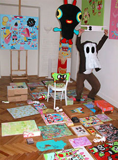
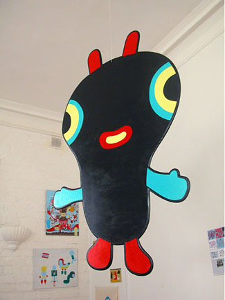
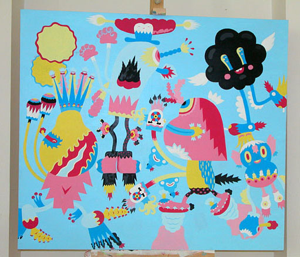
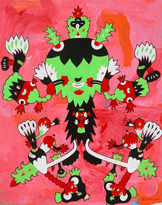
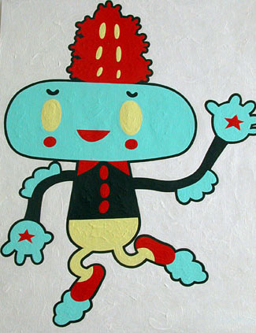
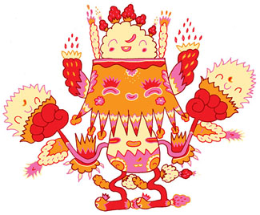
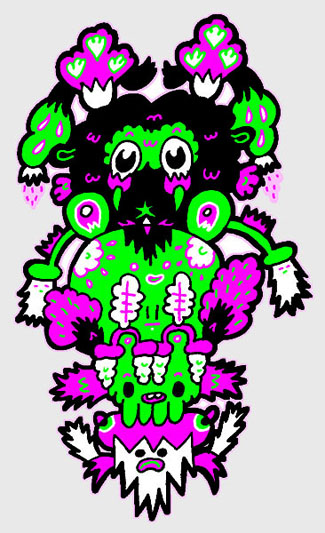
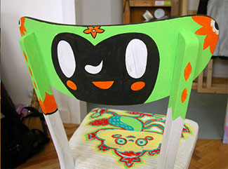

ДУХОВИДЕЦ
Выставка Катыхина
Эдик Катыхин (Эдзя, как он сам себя ласково называет) – один из самых ярких и уж точно самый жизнерадостный в наших краях художник.
Он рассказывает, что в детстве играл в такую игру: когда взрослые смотрели по телевизору что-то свое, он перекрывал рукой угол экрана, представляя, что там идет мультфильм. Потом резко убирал руку, надеясь успеть увидеть его – и никогда не успевал. Но попыток не оставил. Кончилось тем, что телевизор стал не нужен – теперь на периферии зрения мультфильмы идут нон-стоп.
Позже Эдик получил солидное художественное образование (будучи студентом студии «Пилот», он вел там же уроки рисунка и композиции), которому, по счастью (редкий случай), не удалось отбить Эдику вкуса к рисованию. Он лучше других знает и на собственном примере убедительно доказывает, что ничего важнее этого вкуса для художника нет. И именно этим природа одарила его так щедро, что провести хотя бы час и не выпустить на бумагу тысячу-другую персонажей тех самых мультфильмов – дело для Катыхина немыслимое.
Этих персонажей, невидимо сопровождающих его везде и всюду, он называет Espiritas. Он не просто видит их, он живет с ними, он с ними общается, ссорится и советуется. Именно по их настоятельному совету Эдик в какой-то момент в прямом смысле безжалостно сжег все следы своего образования, выкинул из головы все, что умел и начал сначала. Он по-прежнему профессиональный иллюстратор, но из заказчиков оставил себе только тех, кому нужно не дословно выполненное задание, но сам Эдик Катыхин. Самый требовательный и самый важный из таких заказчиков – дочь Соня. Возможно, только четырехлетний ребенок – или тот, кто умеет почувствовать себя на время четырехлетним – может стать настоящим ценителем катыхинской легкости, свежести и веселья. Серия из трех детских книг, сделанных Эдиком для студии Лебедева, уникальный в наших краях шедевр прекрасной невменяемости,– специально для них.
Наш Гери Бейзман, наш Тим Бискап – наш Катыхин покрывает рисунками любую попавшую под горячую руку поверхность – столбы, бетонные стены, асфальт, столы и стулья. Его персонажи суть обереги от скуки, уныния и пустоты. Со временем они заполнят все вокруг, и со скукой, унынием и пустотой будет покончено навсегда.
Экспозицию работ Эдика Катыхина можно будет увидеть в Москве этой зимой в рамках выставки «Институт улыбки». Место проведения – галерея искусств Зураба Церетели. Открытие – 23 декабря.







